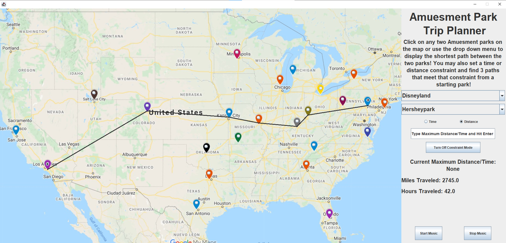
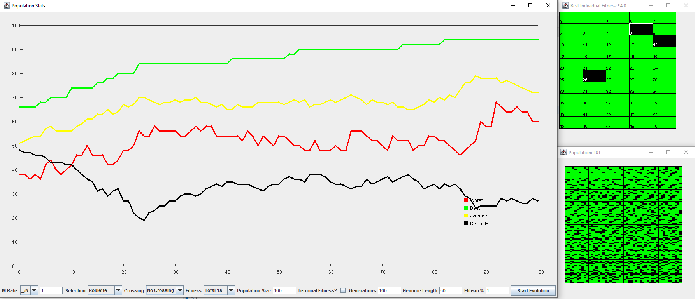

Portfolio
-
A* Path Finding
A project that implemented A* path searhcing algorithm along with its graphical representation. The setting of the project is a partial list of the amusement park in the United States. User can use the starting and ending park, and the algorithm will calculate the shortest path using other parks as midpoints.
-
Genetic Research Algorithm
The algorithm is based on the principles of evolution to evolve a set of individual's genes into specific structures. Included 10 parameters which users can modify change the course of evolution.
-
Code Standardization
A project worked on at summer internship at Zap Surgical. The goal of the project is to refactor libraries across project solutions to conform to code standards.